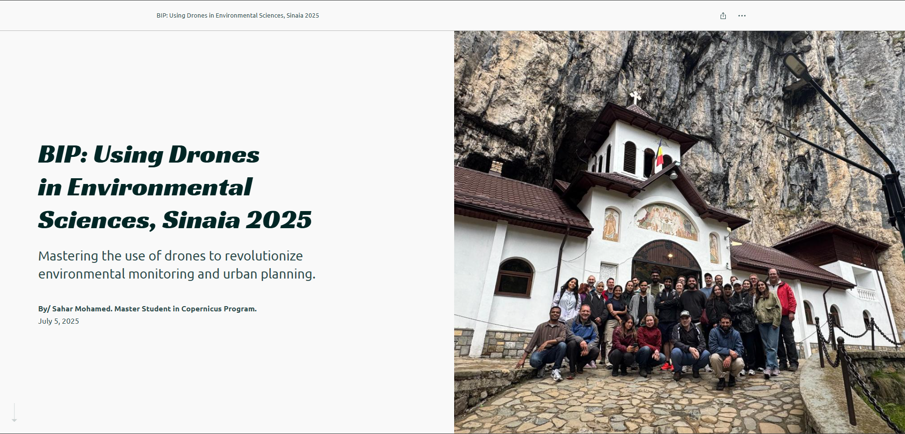
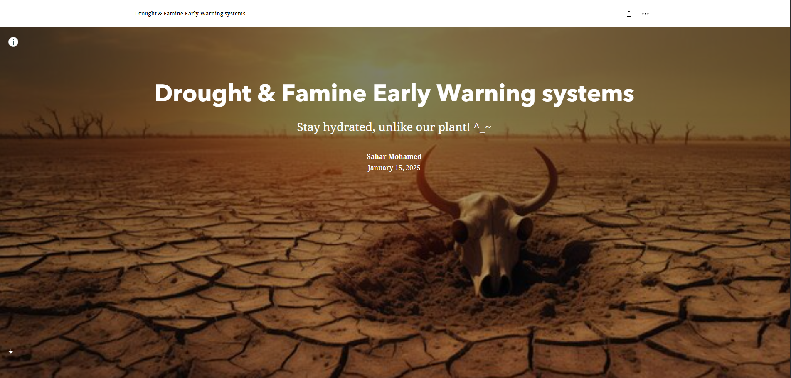
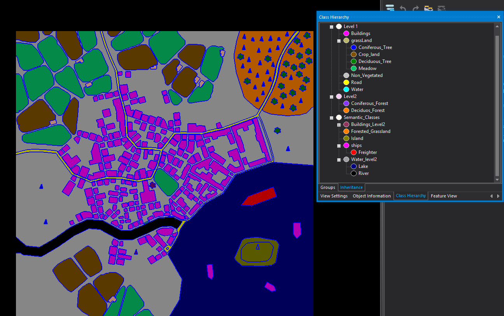

Sahar Mohammed
Hi — I'm Sahar
I work with satellite imagery, AI, and GeoData Science. This site collects my courses, projects, internships and volunteering work.
🚀 Internship (highlight)
Applied research using TomoSAR stacks; built two deep-learning models and produced a detailed internship report.
Selected Projects & Course Work
Practice Software Development — GitHub Projects
Semester projects: QGIS plugins, analysis tools and software demos.

IP — Application Development (Earth Observation)
Final application development project for EO — code and demo available in repo.
BIP Romania — Drones for Environmental Sciences
Drone orthomosaics, vegetation indices and StoryMap report.
Spatial Thinking & Modelling — StoryMap
Group StoryMap for Spatial Thinking and Modelling — narrative and visualizations.

Big Earth Data — Flood Detection (GEE)
Earth Engine app & script for flood detection (live app + source).

GeoHumanitarian Action — StoryMap
StoryMap produced for GeoHumanitarian class — spatial analysis for humanitarian contexts.
OBIA — Coastal Habitat Mapping (Final)
Final OBIA project: segmentation, features, rule-based classification. Images & zip will be uploaded soon.
Radar / SAR Project (Advanced Remote Sensing)
SAR processing workflow and displacement map assignment (Taal Volcano case study).

Cairo Festival — Spatial DB
Database backend design for event management WebGIS — schema, spatial data and proximity queries.
Internship — TomoSAR
Forest canopy & ground height estimation using TomoSAR and deep learning (TSNN, M-UNET).